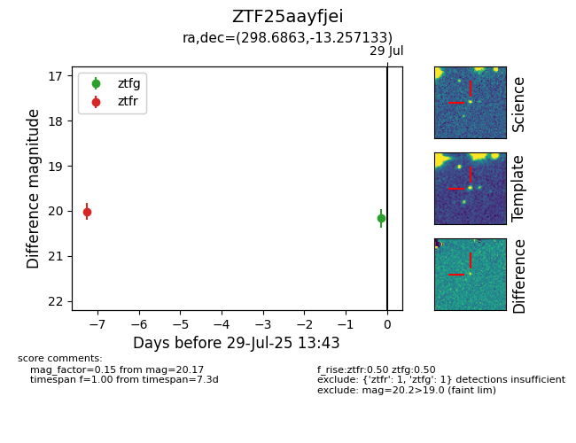

Target ZTF25aayfjei at 2025-07-29 13:43, see:
FINK: fink-portal.org/ZTF25aayfjei
Lasair: lasair-ztf.lsst.ac.uk/objects/ZTF25aayfjei
ALeRCE: alerce.online/object/ZTF25aayfjei
alt names
ZTF25aayfjei (ztf,fink)
coordinates:
equatorial (ra, dec) = (298.6863,-13.25713)
galactic (l, b) = (27.8640,-19.92714)
photometry
last ztfg=20.17, ztfr=20.01
1 ztfg, 1 ztfr detections
